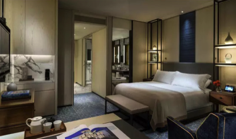

Deluxe Rooms all have breathtaking views of the city of Chandigarh. Richly furnished in silk-clad finishes and complete with indulgent marble bathrooms, these rooms combine classic luxury with the latest Vistas proprietary technology. Three telephones with two IDD lines, voice mail and a world time clock are complemented by free Internet access, a state-of-the-art sound system, a multi-disc CD/DVD player and an iPod docking station. All rooms welcome guests with a teak foyer, complete with walk-in closets and luggage bench. For business travellers in particular, the executive desk is oversized and fully equipped. Subtle tones and mood lighting create a relaxing contrast to the excitement of the city outside. Lights, temperature and even the flat-screen TV can be operated with the bedside fingertip controls. The finest linens, softest pillows and plush bolsters make this room a perfect oasis of calm and tranquility, further enhanced by the legendary Vistas service.
The welcoming lobby and exceptionally spacious and stylish living and sleeping areas give these rooms the grand feeling of an elegant suite. Bright and airy, the space is accented with plush blue upholstery. These rooms are the the perfect setting for in-room dining against a stunning city backdrop. The Superior Rooms are situated on the upper floors of the hotel. Bathed in warm, natural sunlight, the graceful interiors feature rich fabrics, traditional ceramics and the classical lines of design. The elegant design is enhanced with the ultimate in modern technology, including high-speed wireless internet access, mood lighting and electronically controlled curtains. Contemporary furnishings and neutral hues maximise the feeling of space and the views through the large windows.
The mansion-like Duplex Suite rises spectacularly through the 10th and 11th floors with a true sense of grandeur. Private landscaped terraces on each floor are replete with whirlpool for the ultimate in relaxation. The spectacular double-height sitting room on the lower level is adorned with antiques, rich comfortable seating and classic artwork along the 'Minstrel's Gallery' that overlooks it. Two elegant guest bedrooms with en-suite marble bathrooms, a private study and dining room with pantry are also located on this level, whilst upstairs the master bedroom is swathed in cream-coloured silks and has a sumptuous marble bathroom with separate dressing room. A second private study completes this magnificent residence.
Truly palatial, The 4,111 sq ft Presidential Suite is unrivalled in its contemporary opulence. The Suite has the most breathtaking views of the city from the double-height living room with floor-to-ceiling windows and the exclusive landscaped terrace. Rich tones and sumptuous upholstery blend elegantly with the eclectic mix of contemporary and classically styled furnishings. Entertaining is effortless with a dedicated TV room featuring state-of-the-art entertainment systems, a 10-seat dining room with adjoining kitchen which allows guests to entertain in exceptional style complete with legendary Vistas service. A comfortable private living room, palatial bedrooms, bathrooms, a gym and a cinematic screening room are separated from the main living area by majestic double doors.